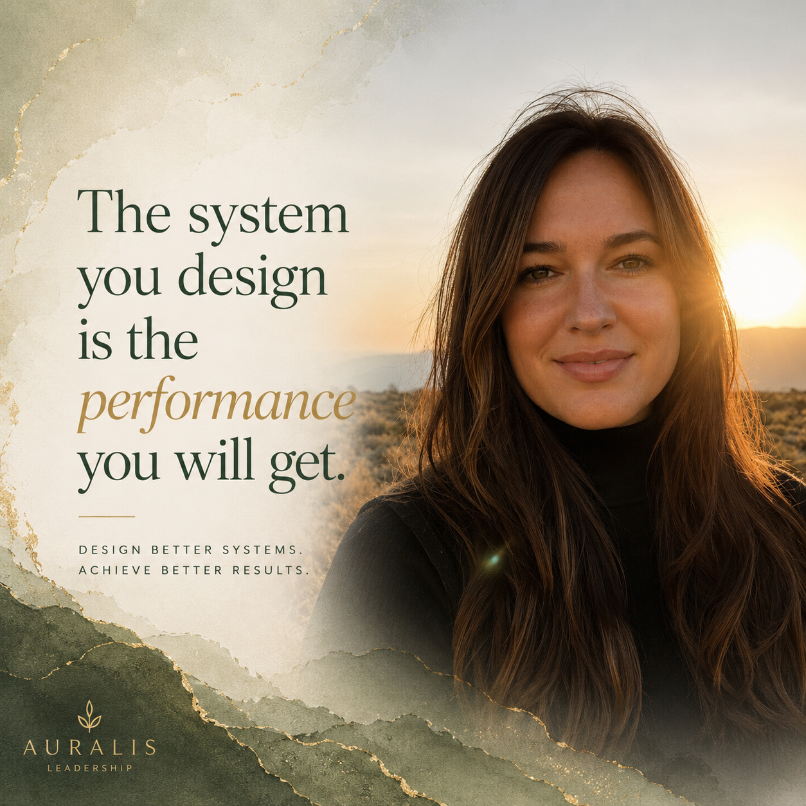
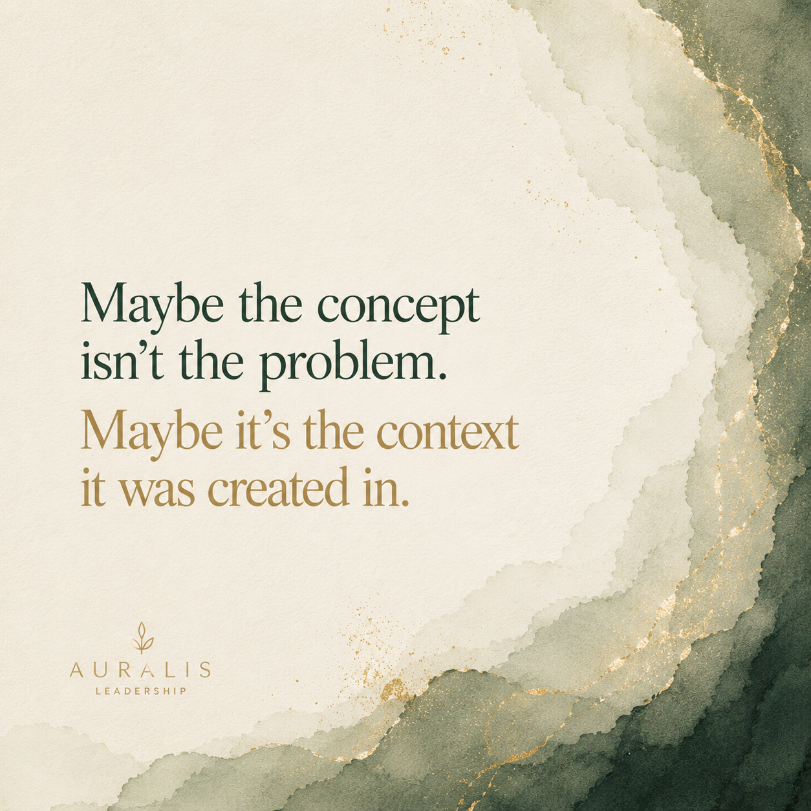
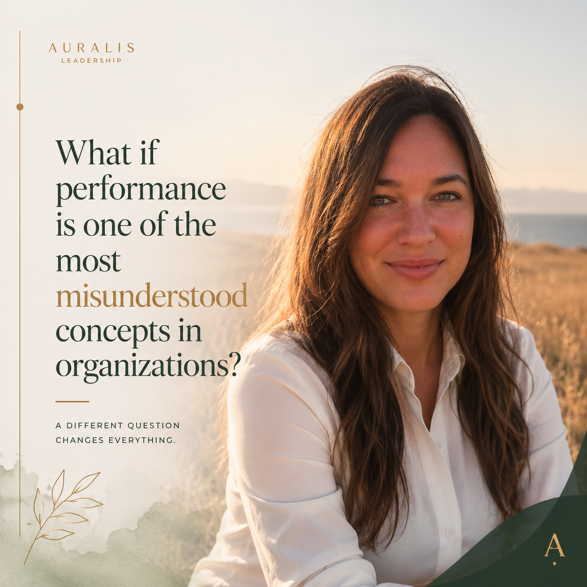

A Different Question
Une question différente
You've tried the meetings, the restructuring, the new processes. It still isn't working.
Vous avez essayé les réunions, la restructuration, les nouveaux processus. Ça ne fonctionne toujours pas.
That's not a leadership problem. That's a pattern problem.
Ce n'est pas un problème de leadership. C'est un problème de patterns.
What makes this different
Ce qui rend cela différent
Performance is not solely a reflection of individuals. It emerges from the interaction between people and the conditions in which they operate — the clarity, authority, information, alignment, systems, and feedback that either enable performance or quietly undermine it.
La performance n'est pas uniquement le reflet des individus. Elle émerge de l'interaction entre les personnes et les conditions dans lesquelles elles évoluent — la clarté, l'autorité, l'information, l'alignement, les systèmes et la rétroaction.
"When performance issues appear, most people look at the people. I look at the environment. That's where the real answer lives."
« Quand des problèmes de performance apparaissent, la plupart regardent les personnes. Moi, je regarde l'environnement. C'est là que se trouve la vraie réponse. »
— Cassandra Poulin, Organizational Diagnostician
The Auralis Performance Environment Diagnostic™
Le Diagnostic Auralis Performance Environment™
I start by asking four questions: What's working? What do you think isn't? What are your blind spots? And — if you had a magic wand, what would you change instantly?
Je commence par quatre questions : Qu'est-ce qui fonctionne? Qu'est-ce qui ne fonctionne pas? Quels sont vos angles morts? Et — si vous aviez une baguette magique, que changeriez-vous instantanément?
Then we go deeper. Because what you think you want to fix — is that really it? Or is there something else behind it?
Ensuite, on creuse. Parce que ce que vous pensez vouloir régler — est-ce vraiment ça? Ou y a-t-il autre chose derrière?
Book the Diagnostic →What the diagnostic measures
Ce que le diagnostic mesure
36 questions across 6 dimensions. Administered across all levels of your organization — because if someone can't answer a question, that itself is diagnostic data.
36 questions réparties en 6 dimensions. Administré à tous les niveaux de votre organisation — car si quelqu'un ne peut pas répondre à une question, c'est déjà une donnée diagnostique.
Results produce an overall Performance Environment Score (0–100), a dimension breakdown, a gap analysis across role tiers, and a plain-language interpretation of what the pattern means — and what to do about it.
Les résultats produisent un score global (0–100), une analyse par dimension, une analyse des écarts entre niveaux hiérarchiques, et une interprétation claire de ce que le pattern signifie — et quoi en faire.
Six Dimensions of the Performance Environment
Six dimensions de l'environnement de performance
Each dimension reveals a different layer of what's enabling — or silently blocking — performance in your organization.
Chaque dimension révèle une couche différente de ce qui permet — ou bloque silencieusement — la performance dans votre organisation.
Performance Environment Maturity Model
The diagnostic places your organization within one of five levels — describing the system, not the people.
Le diagnostic situe votre organisation dans l'un des cinq niveaux — décrivant le système, pas les personnes.
About the Name
Le sens du nom
Auralis comes from Aurum — the Latin word for gold.
Auralis vient d'Aurum — le mot latin pour l'or.
Gold doesn't announce itself. It doesn't sit on the surface. You have to know where to look, how to read the patterns in the rock, and have the patience to go deeper than everyone else.
L'or ne s'annonce pas. Il ne se trouve pas en surface. Il faut savoir où chercher, comment lire les patterns dans la roche, et avoir la patience d'aller plus loin que tout le monde.
That's what we do at Auralis Leadership.
C'est ce que nous faisons chez Auralis Leadership.
My Approach
Mon approche
Throughout my career, I noticed something: I see patterns others don't. Across people, processes, systems, and structures — I make connections that most miss.
Tout au long de ma carrière, j'ai remarqué quelque chose : je vois des patterns que les autres ne voient pas. À travers les personnes, les processus, les systèmes — je fais des connexions que la plupart manquent.
I'm not afraid to say the uncomfortable thing. And when 98% of people say "we can't do it," I come back with 161 ways we can — tailored to your people, your timeline, your budget.
Je n'ai pas peur de dire ce qui est inconfortable. Et quand 98% des gens disent « on ne peut pas », je reviens avec 161 façons d'y arriver — adaptées à vos gens, votre calendrier, votre budget.
A defining principle
Un principe fondateur
"If you've tried so many things and it still doesn't work — I'm your person."
« Si vous avez tout essayé et que ça ne fonctionne toujours pas — je suis votre personne. »
— Cassandra Poulin, Organizational Diagnostician
Who this is for
Pour qui
Business owners, executives, HR and People & Culture leaders, and transformation teams who know something is off — and are ready to find out why.
Propriétaires d'entreprises, dirigeants, responsables RH et Culture, et équipes de transformation qui savent que quelque chose ne va pas — et sont prêts à découvrir pourquoi.
Field Notes
Notes de terrain

Article · LinkedIn Pulse
Article · LinkedIn Pulse
Why Most Performance Issues Are Actually Leadership Design Problems
Pourquoi la plupart des problèmes de performance sont en fait des problèmes de conception du leadership
The system you design is the performance you will get. What happens when we stop blaming people and start examining the environment?
Le système que vous concevez est la performance que vous obtiendrez. Que se passe-t-il quand on arrête de blâmer les gens et qu'on examine l'environnement?
Read the article →
Carousel · LinkedIn
Carrousel · LinkedIn
Conscious Leadership
Leadership conscient
Maybe the concept isn't the problem. Maybe it's the context it was created in. A different lens on what leadership actually requires.
Peut-être que le concept n'est pas le problème. Peut-être que c'est le contexte dans lequel il a été créé. Une perspective différente sur ce que le leadership exige vraiment.
View the post →
Carousel · LinkedIn
Carrousel · LinkedIn
What if performance is one of the most misunderstood concepts in organizations?
Et si la performance était l'un des concepts les plus mal compris dans les organisations?
When results fall short, we examine effort, attitude, capability. But rarely expectations, priorities, constraints, or systems. Perhaps we're looking in the wrong place.
Quand les résultats déçoivent, on examine l'effort, l'attitude, les compétences. Mais rarement les attentes, les priorités, les contraintes ou les systèmes.
View the post →Let's have a conversation
Commençons la conversation
Better alignment. Deeper understanding. Transformation that lasts.
Meilleur alignement. Compréhension profonde. Une transformation qui dure.
Start the Conversation → Commencer la conversation →